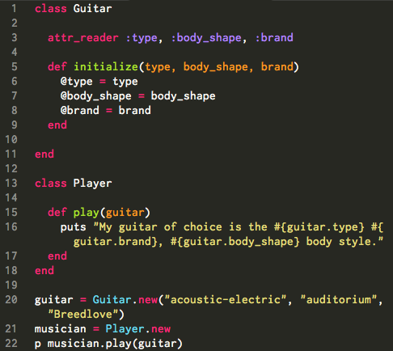

Defining a Class
Defining a class is a ruby programming technique for creating objects on a batch basis. A class is the blueprint and instances of the class are objects. You can apply this blueprint -> object idea to many different objects. For example, my macbook computer is an instance of the class, Laptops.
Take a look at the Guitar class I created below. It was initialized with three arguments: type, body_shape, and brand. The initialize method executes every time you create a new instance of the class. It sets an object's state at the time of the object's creation.
Within the initialize method, I've assigned our three arguments to instance variables. These variables are able to be accessed across methods within the same object, that is, within each instance of the class.
Attributes
An attribute is a property of an object whose value can be read and/or written through the object. The attr_reader defined at the beginning of our 'Guitar' class gives the 'Player' class access to our three instance variables by creating new methods within that class.
Can you guess what the output of this program will be?